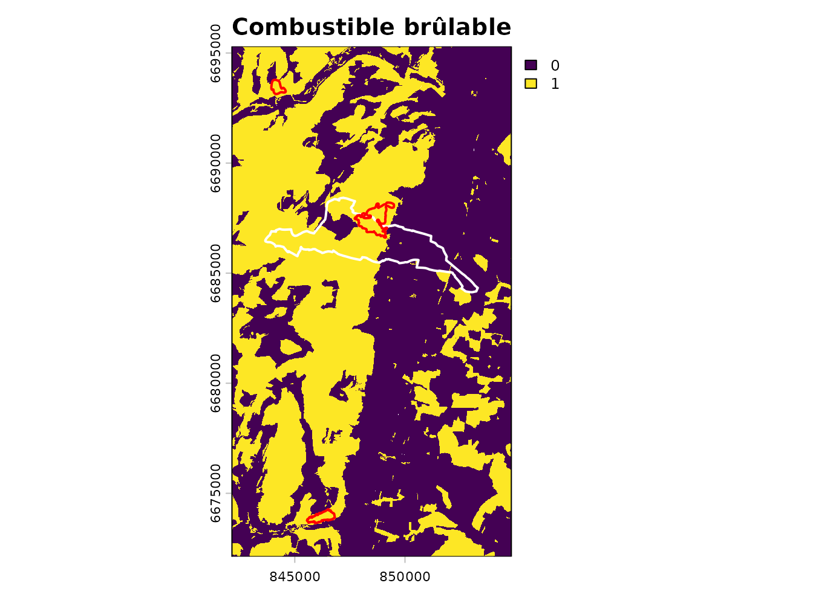
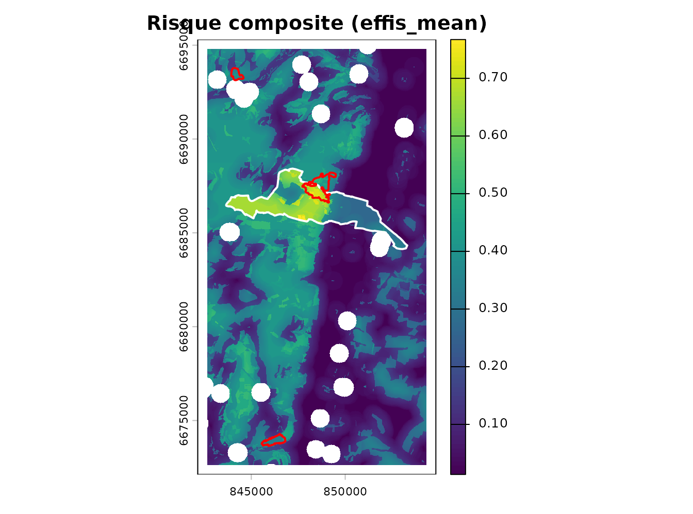
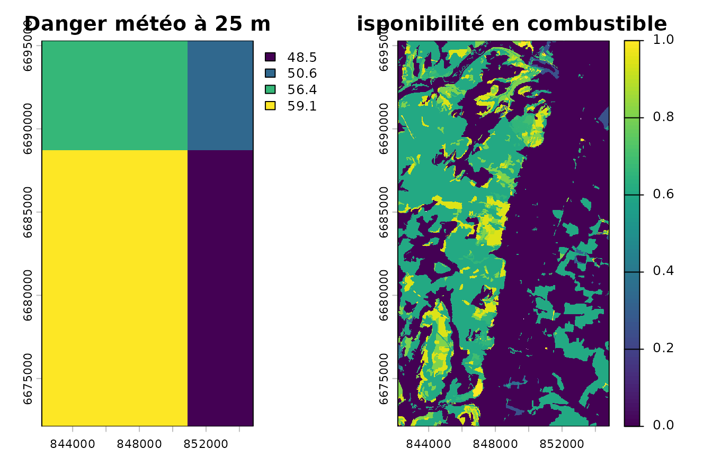
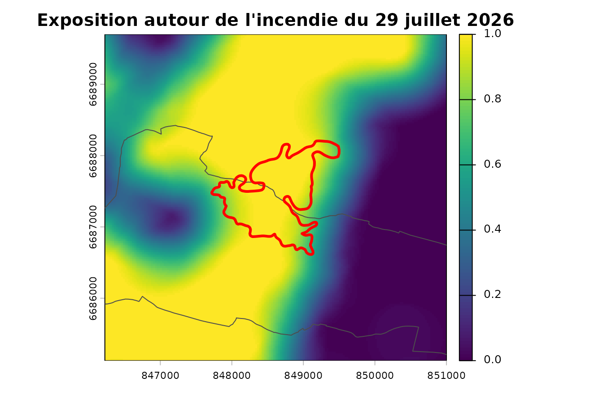
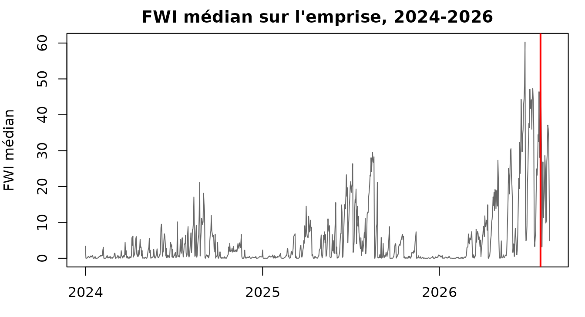

Couchey : la chaîne sur données réelles, et l'incendie du 29 juillet 2026
Source:vignettes/couchey.Rmd
couchey.RmdLa vignette principale déroule la
chaîne sur un paysage inventé. Celle-ci la déroule de bout en bout sur
des données réelles — végétation, feux et désormais
météo — autour de Couchey, en Côte-d’Or — territoire de
référence du projet voisin nemetonshiny — et se termine sur
un incendie qui a réellement brûlé la commune le 29 juillet
2026, six semaines avant la constitution de cet extrait.
Le terrain n’a pas été choisi pour flatter le package. Couchey est l’inverse de ce pour quoi il a été conçu : chênaie, hêtraie et charmaie de plaine bourguignonne, avec des vignes là où un exemple varois aurait de la garrigue. Plusieurs valeurs par défaut y sont visiblement moins à leur place, et la vignette le montre.
Les données
L’extrait est livré avec le package et lu depuis le disque. Il a été
constitué le 2026-08-16 par
data-raw/build_couchey_extract.R, qui contacte les services
réels ; l’article ne touche pas au réseau, pour la même raison que les
tests : une documentation rouge ne doit pas être un bulletin de
disponibilité de l’IGN.
gpkg <- system.file("extdata", "couchey.gpkg", package = "firexpovulnR")
commune <- st_read(gpkg, "commune", quiet = TRUE)
study <- st_read(gpkg, "study_area", quiet = TRUE)
bdforet <- st_read(gpkg, "bdforet_v2", quiet = TRUE)
corine <- st_read(gpkg, "clc_2018", quiet = TRUE)
feux <- st_read(gpkg, "burnt_areas", quiet = TRUE)
c(commune = commune$nom, insee = commune$insee,
km2 = round(as.numeric(st_area(study)) / 1e6, 1),
bdforet = nrow(bdforet), corine = nrow(corine), feux = nrow(feux))
#> commune insee km2 bdforet corine feux
#> "Couchey" "21200" "292.5" "988" "176" "3"Ce qu’on y trouve, en vrai :
sort(table(bdforet$code_tfv), decreasing = TRUE)[1:6]
#>
#> FF1-00-00 FF1-00 FF1G01-01 FF31 FF2G53-53 FF32
#> 213 126 117 99 75 69
sort(table(corine$code_18), decreasing = TRUE)[1:6]
#>
#> 311 112 211 312 221 321
#> 27 22 21 18 11 11Aucun pin d’Alep, aucun chêne vert, aucune lande. Du mélange de
feuillus (FF1-00-00), du chêne décidu
(FF1G01-01), du hêtre (FF1-09-09) — et en
CORINE, du 221, c’est-à-dire des vignes,
sur la Côte.
Le millésime, et pourquoi il reste ambigu ici
Le package sait retrouver le millésime de la BD Forêt v2 : l’IGN le définit comme la date de prise de vue de la BD ORTHO sur laquelle elle a été photo-interprétée. Sur cette emprise, cela donne ceci :
mil <- st_drop_geometry(st_read(gpkg, "millesime_candidates", quiet = TRUE))
mil[, c("dep", "pva", "date_vol", "year", "pct_area")]
#> dep pva date_vol year pct_area
#> 1 21 2010 2010-07-07 2010 33.8
#> 2 21 2014 2014-07-17 2014 33.9
#> 3 71 2007 2007-01-01 2007 31.0
#> 4 71 2014 2014-07-17 2014 1.3Trois campagnes distinctes — 2007, 2010 et 2014 — sur deux départements, à un tiers de la surface chacune. L’emprise déborde de la Côte-d’Or sur la Saône-et-Loire, et les deux n’ont pas été survolées la même année.
C’est le cas d’école de ce que la fonction refuse de trancher : l’IGN ne publie pas laquelle de ces campagnes a alimenté la production de quel département, et rien dans la donnée ne le dit. On retient la plus ancienne, qui est la lecture prudente — celle qui maximisera l’écart rapporté à la fin.
millesime_prudent <- min(mil$year)
millesime_prudent
#> [1] 2007Combustible
primaire <- fev_fuel_source(bdforet, type = "bdforet_v2", res = 25,
aoi = study, millesime = millesime_prudent)
auxiliaire <- fev_fuel_source(corine, type = "clc_2018", res = 25,
aoi = study, millesime = 2018)
fuel <- fev_fuel_merge(primaire, auxiliaire)
#> "clc_2018" filled 278830 cells (59.3%) that
#> "bdforet_v2" left unmapped.La couche de provenance par pixel dit ce que chaque source apporte :
src <- fev_fuel_categorical(fuel)[["source"]]
lv <- terra::levels(src)[[1]]
tab <- table(lv$class[match(terra::values(src)[, 1], lv$id)])
round(100 * tab / sum(tab), 1)
#>
#> bdforet_v2 clc_2018
#> 40.7 59.3Où les défauts du package sont mal à l’aise
ft <- fev_fuel_type(fuel)
freq <- terra::freq(fev_data(ft))
head(freq[order(-freq$count), c("value", "count")], 5)
#> value count
#> 5 cropland 190865
#> 1 broadleaf_closed 148556
#> 10 non_fuel 68296
#> 3 conifer_closed 23655
#> 7 mixed_closed 16721Le peuplement dominant est du feuillu fermé, auquel
fev_fuel_weights() attribue 0,60 — contre
0,95 pour le conifère fermé et 1,00 pour le maquis. Ces poids sont une
convention du package, pas une mesure, et ils ont été ordonnés en
pensant au pourtour méditerranéen. Sur une chênaie bourguignonne ils
disent surtout « moins inflammable que du pin d’Alep », ce qui est vrai
et peu informatif — et l’incendie de la section 7 rappellera que « moins
» n’est pas « pas ».
Et les vignes, classées non brûlables :
clc_lookup <- fev_fuel_lookup("clc")
clc_lookup[clc_lookup$code == "221", c("code", "label", "burnable", "confidence")]
#> code label burnable confidence
#> 15 221 Vineyards FALSE ambiguousL’une des sept lignes agricoles marquées ambiguous. Sur
la Côte, une vigne travaillée est effectivement un pare-feu ;
l’hypothèse tient. Elle tiendrait moins bien sur des terrasses
abandonnées.
brulable <- fev_fuel_binary(fuel)
par(mar = c(2, 2, 2, 4))
plot(fev_data(brulable), main = "Combustible brûlable")
plot(st_geometry(commune), add = TRUE, border = "white", lwd = 2)
plot(st_geometry(feux), add = TRUE, border = "red", lwd = 2)
Trait blanc, la commune. Traits rouges, les trois incendies.
Exposition
expo <- fev_exposure(brulable, radius = 500, type = "ember", quiet = TRUE)
terra::global(fev_data(expo), c("mean", "max"), na.rm = TRUE)
#> mean max
#> exposure 0.4623234 1Le rayon de 500 m vient de travaux albertains, validés depuis au Portugal. Sur une mosaïque bourguignonne de bois, cultures et vignes, il n’est validé nulle part.
Danger météorologique — données réelles, sans aucun jeton
Le produit historique CEMS demande un jeton Copernicus personnel, que
le package s’interdit de manipuler. Ce n’est plus un obstacle :
fev_fetch_weather() lit l’archive Open-Meteo, qui
re-sert ERA5 et ERA5-Land sans aucune authentification.
La météo de cette page est donc réelle, et le script d’extraction n’a lu
aucune clé.
Trois ans à 12:00 UTC, un point par maille de réanalyse, livrés avec le package :
meteo_tab <- read.csv(gzfile(system.file("extdata", "couchey_weather.csv.gz",
package = "firexpovulnR")))
c(points = length(unique(meteo_tab$id)), jours = nrow(meteo_tab),
du = min(meteo_tab$yr), au = max(meteo_tab$yr))
#> points jours du au
#> 16 15360 2024 2026Le jour de l’incendie, mesuré et non supposé :
jour <- meteo_tab[meteo_tab$yr == 2026 & meteo_tab$mon == 7 &
meteo_tab$day == 29, ]
round(sapply(jour[, c("temp", "rh", "ws", "prec")], mean), 1)
#> temp rh ws prec
#> 35.5 19.7 14.1 0.0Trente-cinq degrés et 20 % d’humidité relative en Côte-d’Or : le contexte n’est pas anecdotique.
Un piège que la donnée servie révèle
Le service renvoie les coordonnées de la maille qu’il a lue, et plusieurs points demandés peuvent tomber dans la même — sans partager la même série, parce que la température est corrigée de l’altitude du point demandé :
g <- unique(meteo_tab[, c("id", "lat", "long", "cell_lat", "cell_long",
"elev_m")])
g[order(g$cell_lat, g$cell_long), ][1:4, ]
#> id lat long cell_lat cell_long elev_m
#> 14401 16 47.1 5.1 47.06502 5.121951 228
#> 11521 13 47.1 4.8 47.13532 4.837133 507
#> 12481 14 47.1 4.9 47.13532 4.837133 328
#> 13441 15 47.1 5.0 47.13532 4.983713 215C’est pourquoi le paquet garde le point demandé comme identité de station, et fait voyager la maille servie comme diagnostic : indexer sur les coordonnées renvoyées fusionnerait des séries distinctes et perdrait des points.
Du tableau au FWI
Les codes d’humidité du système canadien sont cumulatifs : le FFMC,
le DMC et le DC d’un jour dépendent de ceux de la veille au même
endroit. fev_fwi_from_weather() passe par la voie
tabulaire de cffdrs, où les codes s’accumulent
indépendamment par point — la voie raster, elle, ne sait porter que des
codes de départ scalaires et lisserait la sécheresse en moyenne
spatiale.
meteo <- fev_data(fev_fwi_from_weather(meteo_tab, index = "FWI",
crs_work = 2154))
danger_pct <- fev_fwi_percentile(meteo, ref_period = c(2024, 2026))Sur un FWI bourguignon, les seuils absolus EFFIS placeraient presque tout en classe basse toute l’année. C’est exactement ce que la calibration en percentiles corrige : un 98e percentile veut dire « journée exceptionnelle ici ».
Trois ans de référence, pas trente : la normale de l’OMM est de
trente ans, et c’est ce qu’il faudrait. Ce n’est pas une limite du
paquet mais de ce qu’il est raisonnable d’embarquer dans
inst/extdata — un seul appel l’élargit, l’archive remontant
à 1940 :
fev_fetch_weather(study, period = c("1996-01-01", "2025-12-31"))Alignement, vulnérabilité, risque
dernier <- fev_data(danger_pct)[[terra::nlyr(fev_data(danger_pct))]]
dispo <- fev_fuel_availability(fuel, weights = fev_fuel_weights(quiet = TRUE))
pile <- fev_align(danger = dernier, disponibilite = fev_data(dispo),
exposition = fev_data(expo))
#> Warning: Aligning layers whose cell sizes differ by a factor of 380.1.
#> ℹ Finest "disponibilite" at 25; coarsest "danger" at 9502.42.
#> ℹ Target grid: 25 (finest).
#> ℹ Each coarse cell is copied across about 144000 fine cells. That adds
#> resolution, not information.
#> ℹ The ratio is recorded in the provenance.
bati <- terra::rasterize(vect(commune), pile$exposition, field = 1,
background = 0)
vuln <- fev_vuln_stack(
humaine = fev_vuln_layer(bati, method = "minmax", name = "commune"),
forestiere = fev_vuln_layer(pile$exposition, method = "percentile_rank",
name = "expo"),
weights = c(0.5, 0.5)
)
#> Warning: "minmax" normalisation rescales on this extent's own range.
#> ℹ Observed range 0 and 1. The same cell scores differently under a different
#> AOI, so vulnerability layers are not comparable between study areas.
#> ℹ Shown once per session; recorded in the provenance every time.
danger <- fev_danger_index(pile$danger, pile$disponibilite,
normalise = "percentile")
risque <- fev_risk(danger, vuln, normalise = "none")
par(mar = c(2, 2, 2, 4))
plot(fev_data(risque), main = "Risque composite (effis_mean)")
plot(st_geometry(commune), add = TRUE, border = "white", lwd = 2)
plot(st_geometry(feux), add = TRUE, border = "red", lwd = 2)
Les dalles rectangulaires sont la grille météo, et elles sont voulues
La carte ci-dessus est visiblement pavée de grands rectangles. Ce
n’est pas un défaut d’harmonisation des grilles :
fev_align() a mis les trois couches sur exactement la même
grille de 25 m, et fev_risk() aurait refusé sinon.
Ces dalles sont le contenu de la couche de danger, pas un artefact d’assemblage. La grille météo est celle de la réanalyse, à 0,1° — et sur cette emprise elle ne fait que trois cellules de large :
c(maille_meteo_m = round(res(meteo)[1]),
maille_combustible_m = res(pile$exposition)[1],
rapport = round(res(meteo)[1] / res(pile$exposition)[1]),
cellules_meteo = ncol(meteo) * nrow(meteo))
#> maille_meteo_m maille_combustible_m rapport
#> 9502 25 380
#> cellules_meteo
#> 15Une maille météo de 9,5 km recouvre donc 380 pixels de
combustible dans chaque direction, soit environ 144 000 pixels
par maille. En les descendant à 25 m, fev_align() utilise
le plus proche voisin — délibérément :
par(mfrow = c(1, 2), mar = c(2, 2, 2, 4))
plot(pile$danger, main = "Danger météo à 25 m")
plot(fev_data(dispo), main = "Disponibilité en combustible")
À gauche, la météo telle qu’elle est réellement résolue. À droite, le combustible. Le bilinéaire aurait dessiné un dégradé lisse entre les centres de mailles — plus joli, et représentant une variation que la donnée n’a jamais mesurée. Le plus proche voisin laisse voir l’escalier, qui est ce que la donnée dit vraiment.
Et il faut lire ces dalles comme une version atténuée du problème. Avec le produit CEMS à 0,25°, les mailles font environ 19 × 28 km : toute cette emprise de 12,6 × 23,1 km tiendrait dans une seule d’entre elles. La carte de risque ne serait alors plus pavée du tout — elle serait modulée uniformément par une valeur météo unique, ce qui est le même aveu sous une forme moins visible. Les trois cellules visibles ici sont donc l’avantage de cette voie, pas son défaut : 2,5 fois plus fine que la référence.
C’est pour cela que fev_align() inscrit le rapport
d’échelle dans la provenance et avertit à chaque appel : descendre le
danger sur la grille du combustible ajoute de la résolution, pas de
l’information.
L’incendie du 29 juillet 2026
st_drop_geometry(feux)[, c("fire_date", "area_ha", "COMMUNE", "CLASS")]
#> fire_date area_ha COMMUNE CLASS
#> 1 2020-07-31 26 Velars-sur-Ouche FireSeason
#> 2 2026-07-08 41 Nuits-Saint-Georges FireSeason
#> 3 2026-07-29 124 Couchey 30DAYSTrois incendies, tous ceux que l’endpoint public EFFIS sert dans un rayon de 20 km. Le troisième a brûlé Couchey même.
couchey <- feux[feux$COMMUNE == "Couchey", ]
st_drop_geometry(couchey)[, c("FIREDATE", "FINALDATE", "area_ha", "PERCNA2K",
"BROADLEA", "MIXED", "OTHERNATLC")]
#> FIREDATE FINALDATE area_ha PERCNA2K
#> 3 2026-07-29 13:42:00 2026-07-30 02:15:00 124 99.99999999999997
#> BROADLEA MIXED OTHERNATLC
#> 3 60.48387096769316 16.935483870954084 22.580645161272113124 hectares, déclaré le 29 juillet 2026 à 13 h 42,
éteint le lendemain à 2 h 15 — un peu plus de douze heures.
PERCNA2K = 100 : la totalité de la surface brûlée est en
site Natura 2000. Et l’occupation du sol brûlée, telle qu’EFFIS la
ventile, est à 60 % de feuillus et 17 % de forêt mixte.
C’est-à-dire exactement le combustible que les poids par défaut du package classent en bas de leur échelle.
zone <- st_buffer(st_geometry(couchey), 1500)
par(mar = c(2, 2, 2, 4))
plot(terra::crop(fev_data(expo), vect(zone)),
main = "Exposition autour de l'incendie du 29 juillet 2026")
plot(st_geometry(commune), add = TRUE, border = "grey30", lwd = 1)
plot(st_geometry(couchey), add = TRUE, border = "red", lwd = 3)
Ce que la météo réelle permet enfin de vérifier
Tant que la série était inventée, la seule chose que cette page pouvait dire de l’incendie était sa géométrie. Avec trois ans de FWI réel, on peut poser la question qui compte : le 29 juillet 2026 était-il un jour remarquable ?
med <- terra::global(meteo, stats::median, na.rm = TRUE)[, 1]
dates <- as.Date(terra::time(meteo))
rang <- rank(-med)[dates == as.Date("2026-07-29")]
c(fwi_median = round(med[dates == as.Date("2026-07-29")], 1),
rang = rang, sur_n_jours = length(med))
#> fwi_median rang sur_n_jours
#> 50.4 2.0 960.0Deuxième jour sur 960. Sur trois années, un seul jour a été plus dangereux que celui où la commune a brûlé — à Couchey, en Bourgogne, où les seuils absolus d’EFFIS ne classent presque jamais rien.
Il faut être précis sur ce que cela vaut. Ce n’est pas une validation
du modèle de risque : aucune donnée de feu n’entre dans le calcul du
FWI, mais un seul incendie ne fait pas un échantillon, et un jour de
canicule est un jour où l’on allume aussi plus de départs. Ce que cela
montre, c’est que la voie Open-Meteo → cffdrs produit un
signal qui tombe au bon endroit sur le seul événement que ce territoire
offre — ce qu’une série rnorm() ne pouvait par construction
jamais montrer.
par(mar = c(3, 4, 2, 1))
plot(dates, med, type = "l", col = "grey40", xlab = "", ylab = "FWI médian",
main = "FWI médian sur l'emprise, 2024-2026")
abline(v = as.Date("2026-07-29"), col = "red", lwd = 2)
Validation — et la conclusion honnête
val <- fev_validate(risque, feux, millesime = millesime_prudent)
val$temporal$table
#> lag_years n_fires area_ha pct_area
#> 1 <= 0 (fire before the vintage) 0 0 0
#> 2 1 to 5 0 0 0
#> 3 > 5 3 191 100Cent pour cent de la surface brûlée postdate le millésime de plus de cinq ans. Pas une partie : la totalité. L’incendie de Couchey a brûlé dix-neuf ans après la prise de vue la plus ancienne de l’emprise, douze ans après la plus récente. Entre les deux, le peuplement a poussé, a été coupé, s’est refermé — la couche de combustible sous cette carte décrit un paysage d’une autre époque.
data.frame(commune = feux$COMMUNE, annee = feux$fire_year,
ecart_2007 = feux$fire_year - 2007,
ecart_2014 = feux$fire_year - 2014)
#> commune annee ecart_2007 ecart_2014
#> 1 Velars-sur-Ouche 2020 13 6
#> 2 Nuits-Saint-Georges 2026 19 12
#> 3 Couchey 2026 19 12Le filtrage à cinq ans ne laisse donc rien :
fev_validate(risque, feux, millesime = millesime_prudent, max_lag_years = 5)
#> Warning: 100% of the burnt area in this sample postdates the fuel vintage (2007) by more
#> than 5 years.
#> ℹ 3 of 3 fires. Those burnt a landscape the fuel layer does not describe.
#> ℹ They are dropped, on your `max_lag_years`.
#> Error in `fev_validate()`:
#> ! No fire is left after the temporal filter.
#> ℹ `max_lag_years` = 5 against a vintage of 2007 removed all 3 of them.
#> ℹ Either the fuel data long predates the fire record, or the vintage is wrong.C’est le résultat, et il est bon qu’il ressemble à un échec. La conclusion n’est pas « la carte a un AUC de tant » — c’est cette carte ne peut pas être validée avec cette donnée :
- trois incendies ne valident rien, quel que soit l’AUC calculé dessus ;
- ils ont tous brûlé plus de six ans après la photographie aérienne qui fonde la couche de combustible, et celui de Couchey dix-neuf ans après ;
- et l’ambiguïté 2007 / 2010 / 2014 fait varier cet écart de sept ans sans qu’on puisse la lever.
val$auc
#> [1] 0.8624976
val$classes[, c("class", "pct_of_area", "pct_of_burnt", "ratio")]
#> class pct_of_area pct_of_burnt ratio
#> 1 0 - 0.2 51.53 0.40 0.01
#> 2 0.2 - 0.4 29.77 37.24 1.25
#> 3 0.4 - 0.6 16.11 26.92 1.67
#> 4 0.6 - 0.8 2.59 35.45 13.68
#> 5 0.8 - 1 0.00 0.00 NaNLe chiffre existe, il est dans l’objet, et il n’a pas de valeur probante ici. Il est montré pour que ce soit dit explicitement plutôt que par omission — un package qui rendrait un AUC sans rien ajouter serait plus agréable et moins utile.
Ce que cet exemple apprend
| Ce qui tient | Ce qui tient moins |
|---|---|
| La chaîne, les grilles, la provenance | Les poids de disponibilité, ordonnés pour le méditerranéen |
| La récupération du millésime | Son ambiguïté, ici entre trois campagnes |
| La calibration en percentiles | Les seuils FWI absolus, peu discriminants en Bourgogne |
| La météo réelle sans jeton, et le FWI qui tombe juste | Trois ans de référence au lieu de trente, et un tiers dans la chaîne de provenance |
| Le contrôle de biais temporel, qui fait son travail | Le rayon de 500 m, validé ni ici ni ailleurs sur ce combustible |
| Les vignes non brûlables, sur la Côte | La même hypothèse sur des terrasses abandonnées |
Et deux limites que ni le terrain ni le package ne lèvent.
Le sous-étage : ni CORINE ni la BD Forêt ne le décrivent. Une chênaie de Couchey avec un taillis de charme dense et la même sans sont identiques dans la base, et la propagation de surface en dépend directement. Cent vingt-quatre hectares en douze heures dans du feuillu, fin juillet, disent quelque chose que la couche de combustible ne contient pas.
Le millésime : il est désormais récupérable, mais pas désambiguïsable, et il a ici dix-neuf ans de retard sur l’événement qu’on voudrait expliquer. Un inventaire forestier n’est pas une observation en temps réel, et une carte de risque bâtie dessus hérite de son âge.